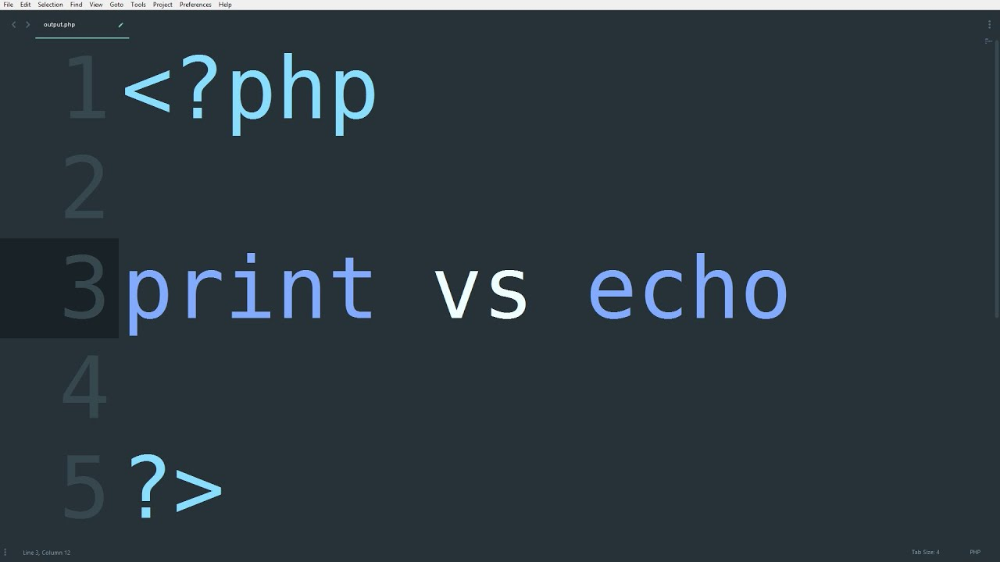

PHP (Hypertext Preprocessor (Препроцесор гіпертексту)) - це широко використовувана мова сценаріїв загального призначення з відкритим вихідним кодом.
Синтаксис мови бере початок з C, Java і Perl. PHP досить простий для вивчення. Перевагою PHP є надання web-розробникам можливості швидкого створення динамічних web-сторінок.
Значною відзнакою PHP від якого-небудь коду, що виконується на стороні клієнта, наприклад, JavaScript, є те, що PHP-скрипти виконуються на стороні сервера. Ви навіть можете конфігурувати свій сервер таким чином, щоб HTML-файли оброблялися процесором PHP, так що клієнти навіть не зможуть дізнатися, чи отримують вони звичайний HTML-файл або результат виконання скрипта. Існують три основні області, де використовується PHP.
Створення скриптів для виконання на стороні сервера. PHP найбільш широко використовується саме таким чином. Все, що вам знадобиться, це парсер PHP (у вигляді програми CGI або серверного модуля), вебсервер і браузер. Щоб Ви могли переглядати результати виконання PHP-скриптів в браузері, вам потрібен працюючий вебсервер і встановлений PHP.
Створення скриптів для виконання в командному рядку. Ви можете створити PHP-скрипт, здатний запускатися незалежно від веб-сервера та браузера. Все, що вам буде потрібно - парсер PHP. Такий спосіб використання PHP ідеально підходить для скриптів, які повинні виконуватися регулярно, наприклад, за допомогою утиліти cron [планувальник завдань](на платформах Unix або Linux) або за допомогою планувальника завдань (Task Scheduler) на платформах Windows. Ці скрипти також можуть бути використані в задачах простої обробки текстів.
Створення додатків GUI (графічних інтерфейсів), що виконуються на стороні клієнта. Можливо, PHP є не найкращим мовою для створення подібних додатків, але, якщо ви дуже добре знаєте PHP і хотіли б використати деякі його можливості у своїх клієнт-додатках, ви можете використовувати PHP-GTK для створення таких додатків.